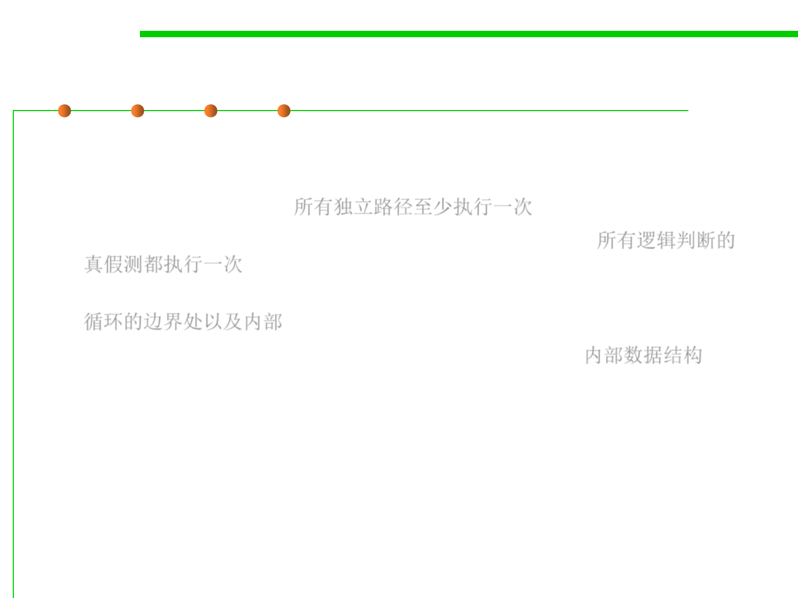

White-box testing
7.5 Testing and Test-First Programming
▪ Using white-box testing methods, you can derive test cases that
– Guarantee that all independent paths within a module have been
exercised at least once, 所有独立路径至少执行一次
– Exercise all logical decisions on their true and false sides, 所有逻辑判断的
真假测都执行一次
– Execute all loops at their boundaries and within their operational bounds,
循环的边界处以及内部
– Exercise internal data structures to ensure their validity. 内部数据结构